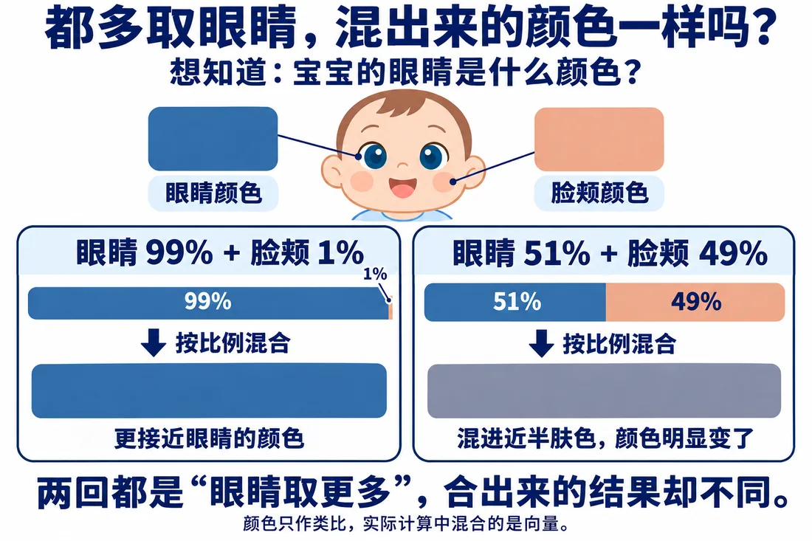

我们在这儿
上一篇电脑从 81 个候选里筛出一张 WK，五道题都过。可那五道题只检查谁的分数更高，没管差多少。这一篇研究哪些因素会影响取回比例。
先看原句的位置。再用下面这张图，看比例偏一点会带来多大差别。

这一篇要解决看分数差距和格数怎样影响比例，并引入缩放。
大概阅读约 12–16 分钟
两种配比都符合“借给取更多”：
但合出来的资料差很多。
只知道谁多不够。各取多少，也很要紧。
把上一篇的 WK 整体乘 10，再算 K。
结果有两点：
交给 softmax 后，几乎全用“借给”，“妹妹”分不到了。
原来七成茶三成奶，现在几乎全茶。名次一样，配比大变。
分数相差多少会影响配比。不过线索真集中时，多取也合理。我们要研究的是：哪些影响必须消除。
前面都用两格，方便手算。实际可能要 8 格、128 格。
设计一个试验：
这是为了观察格数影响的思想实验，不是模型训练。
从 2 格加到 8 格、128 格，“几乎全用一处”越来越频繁。
这里有两个条件：
变的只是格数，配比却更容易偏。
格数本身没告诉电脑哪份更值得取，却影响了配方。这件事必须摆平。
这里可以先歇一下，下次从这一站接着读。
把匹配分都除以同一个大于 1 的数。顺序不变，差距缩小。
统计分差起伏：
注意：
起伏跟着格数的平方根涨。
把格数记作 d，d 就是 Q、K 共用的那几格。
让每个匹配分除以 √d，正好把多出来的起伏抵消。这一步叫缩放。
拿 128 格那两万回对照，缩放后“全用一处”明显减少。
回到 31 个位置，完整流程是：
结果存进矩阵 Z。谁发起查询，结果就放在 Z 对应那一行。
一个数的平方根，就是自己乘自己能得到它的那个数。
比如：
缩放时，让匹配分除以格数 d 的平方根。格数越多，除得越多。这样正好把“格数多就容易偏”的影响压下去。
课堂示例数值：这里用两组分数，单独演示缩放前后的比例变化。
百分比按四舍五入显示，所以有时合计会是 101%；精确比例加起来仍是 100%。
聚光灯先看缩放前后的比例。最后再把完整四步从头到尾走一遍。
这一篇收个尾
这一篇拿到：缩放后的完整注意力链路，格数带来的额外起伏被压下去。
下一篇接着看：分成两个注意力头，保留不同查找结果。